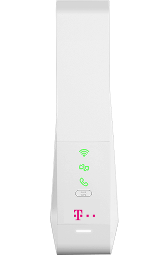

Hallo,
Ich arbeite einmal pro Woche von zu Hause. In unserer Firma verwenden wir Jira (Atlassian Software) mittels Browser. Egal ob ich
Jira funktioniert stundenlang einwandfrei und dann plötzlich für längere Zeiträume von ca. einer halben Stunde nicht (Seite lädt nicht oder nur teilweise). Der Speedtest zeigt keinen Abfall und alle anderen Websites funktionieren einwandfrei. Danach geht es wieder - ohne irgendwas an den Einstellungen oder dgl. zu verändern. Andere Kollegen mit UPC berichten dasselbe. Im Büro, wo wir einen anderen Anbieter haben, treten diese Probleme nicht auf und auch mit mobilem Hotspot kann ich weiterhin in Jira arbeiten.
Mir wäre sehr geholfen, wenn jemand einen Tipp hat. Unser IT Partner scheint mit seinem Latein am Ende zu sein.
Danke und liebe Grüße
Sabrina
Hi,
mit welchem Internetzugang hast du das Problem? DSL, Kabel, Hybrid,...?
Wäre gut zu wissen für eventuelle weitere Lösungsansätze.
LG///MrG0ku
Hallo,
wie oben beschrieben egal ob über Kabel oder WLAN...
Lg Sabrina
vor 18 Minuten schrieb BLS:Hallo,
wie oben beschrieben egal ob über Kabel oder WLAN...
Lg Sabrina
Hi Sabrina,
sorry - es war gemeint welchen Internetzugang du von Magenta hast. Also mit welcher Technologie verbindet sich der Router mit dem Internet?
Ist es ein Hybrid Vertrag (DSL Leitung + LTE), ein LTE Vertrag (nur über LTE/Mobilfunknetz), DSL oder Kabelvertrag?
LG///MrG0ku
Hallo Markus,
Kein Problem, wie gesagt Kabel (120 Mbit).
Lg Sabrina
vor 27 Minuten schrieb BLS:Hallo Markus,
Kein Problem, wie gesagt Kabel (120 Mbit).
Lg Sabrina
Also Docsis/Coax mit der Magenta Internet Fiber Box, oder?

Ja genau - die Symbole sind die gleichen, auf meiner steht halt CONNECT BOX und das UPC Logo statt dem T-Mobile Logo.
Bearbeitet von BLSIch benötige bitte immer noch Hilfe...
Bearbeitet von BLSHallo BLS,
Also allgemeine Meldungen dazu liegen uns nicht vor. Ich würde dir in diesem Fall anraten, dich an unseren Support zu wenden.
Eventuell liegt hier ein einfaches Konfigurationsproblem am Modem vor.
LG
Ja ich hänge eh mal wieder in der Warteschleife...